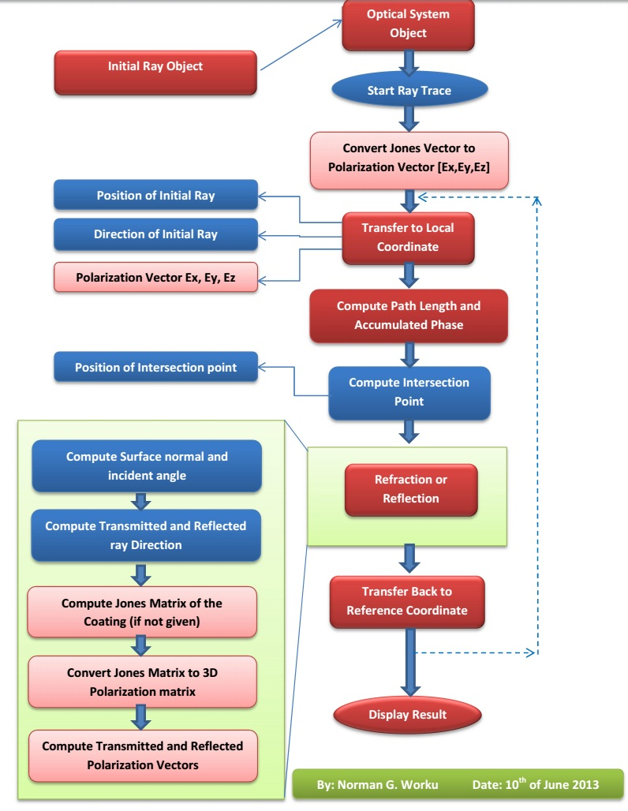
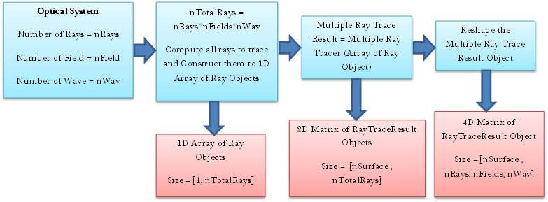

This class is used to define the optical system object which contains all informations related with the optical system defined.
Number of Properties: 30
Number of Methods: 39
Most of the properties defined in the optical system class are used for optical system analysis in the toolbox.
Important Methods
1. Main Ray Tracing Function
Syntax:
Function Call:
polarizedRayTracerResult = optSystem.tracePolarizedRay(objectRay,considerSurfAperture)
It is the main ray tracing function which is basis for most analysis features of the toolbox. The function is used to trace Ray objects from object surface to image surface and return all the necessary results of the ray trace.
Basic Flow Chart:

To trace N rays through the system:
Note 1: For single ray object the "tracePolarizedRay" returns a vector (size = nSurface) of RayTraceResult object with each element corresponding to the ray properties at each surface of the optical system starting from Object surface to Image surface. And for N ray objects, the result will be a a 2D matrix of the RayTraceResult object with size [nSurface x N].
Note 2: To simplify tracing multiple rays, an other function called "multipleRayTracer" is defined which does not require the user to construct the initial ray objects explicitly. See the description for "multipleRayTracer".
2. Multiple Ray Tracing Function
Syntax:
Function Call:
[multipleRayTracerResult,pupilCoordinates,pupilGridIndices] = ...
optSystem.multipleRayTracer(wavLen,...
fieldPointXY,nRay,PupSamplingType,JonesVec,considerSurfAperture)
Flow Chart:

To trace multiple rays, all the inputs for all rays to be traced should be given as input. If N rays are to be traced, the sizes of the inputs required:
A vector of ray objects are first constructed and traced through the system. The total number of ray will be nRay*nWav*nField, that is all rays from each field point with each of wavelengths will be traced. The results are restructured to a 4 dimensional matrix [nSurf x nRay x nField x nWav] so that accessing the results for specific field and wavelength is simplified. The final reshaped result makes access of the results for specific field and wavelength very simple.
For instance, 4DRayTraceResult (surfIndex, : , fieldIndex, wavIndex): directly gives the ray trace results for all the rays from field point fieldIndex and with wavelength index wavIndex at surface surfIndex.
3. Other Function
The name of all functions corresponds to their purpose. And all functions are well documented inside with comments whenever necessary. So it is possible to understand the code.
Created with the Personal Edition of HelpNDoc: Free Web Help generator